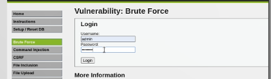
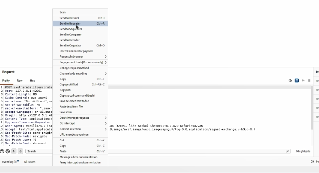
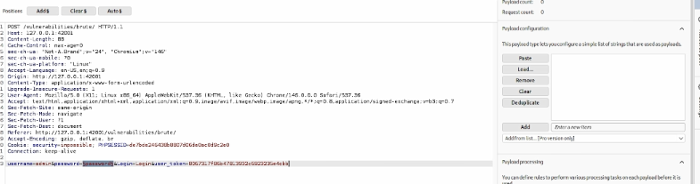

06.октябрь.2026
Освоить практические навыки работы с Burp Suite — комплексным инструментом для тестирования безопасности веб-приложений, и продемонстрировать его возможности по перехвату, анализу и автоматизированному подбору учётных данных на примере уязвимого приложения DVWA.
Открываем в браузере целевую страницу уязвимого приложения DVWA по
адресу http://127.0.0.1:42001/vulnerabilities/brute/. На
странице отображается форма входа с полями для имени пользователя и
пароля. Это классический пример страницы аутентификации, которая будет
использоваться для демонстрации возможностей Burp Suite.

Рис. 1 — Форма входа Brute Force в DVWA
В окне Burp Suite на вкладке Proxy → HTTP history находим нужный
POST-запрос к странице /vulnerabilities/brute/. Через
контекстное меню (правая кнопка мыши) выбираем опцию Send to
Repeater. Это позволяет вынести запрос в отдельный модуль для
детального анализа и ручной модификации.

Рис. 2 — Передача запроса в Repeater через контекстное меню
В модуле Repeater отображается полная структура перехваченного
POST-запроса. Видим заголовки (Host,
Content-Type, Cookie с параметрами
PHPSESSID и security=low) и тело запроса с
параметрами username, password,
Login и user_token. Наличие CSRF-токена
показывает, что DVWA использует защиту от подделки запросов, однако на
уровне Low она не препятствует атаке.
Рис. 3 — Структура POST-запроса в окне Repeater
Из окна Repeater отправляем запрос в модуль Intruder через контекстное меню — опция Send to Intruder или сочетание клавиш Ctrl+I. Intruder предназначен для автоматизации атак перебором и позволяет подставлять значения из словаря в заданные позиции запроса.

Рис. 4 — Передача запроса в Intruder
На вкладке Payloads настраиваем список значений для
перебора. Используем тип Simple list и вводим небольшой
набор паролей вручную: test, example,
admin, password, 123456789,
123456, 1234, login,
qwerty и другие. Короткий список выбран для наглядности,
поскольку Community Edition Burp Suite ограничивает скорость атак
примерно одним запросом в секунду.

Рис. 5 — Настройка полезной нагрузки в Intruder
Запускаем атаку типа Sniper кнопкой Start
attack. В окне результатов отображается таблица со столбцами
Payload, Status code, Response received, Length. Ключевое наблюдение:
все ответы имеют длину 4722 байта, кроме одного — с
payload password, длина которого
4710 байт. Это различие указывает на успешную
аутентификацию, поскольку страница приветствия короче страницы с
ошибкой. Так был найден корректный пароль.

Рис. 6 — Результаты атаки Intruder с найденным паролем
В ходе индивидуального проекта № 5 был изучен и практически применён Burp Suite — комплексный инструмент для тестирования безопасности веб-приложений. С его помощью выполнена атака методом грубой силы на форму аутентификации DVWA с использованием модуля Intruder.
Были освоены ключевые этапы работы: настройка перехвата HTTP-трафика
через Proxy, анализ POST-запроса в Repeater, передача запроса в
Intruder, настройка позиции подстановки с помощью маркеров
§, загрузка списка полезных нагрузок и запуск атаки типа
Sniper.
В результате атаки был успешно определён корректный пароль
password, ответ на который отличался по
длине (4710 байт против 4722 байт у неуспешных попыток). Это
подтверждает небезопасность слабых паролей и демонстрирует эффективность
Burp Suite Intruder как инструмента для автоматизированного тестирования
форм аутентификации.
Полученные навыки могут быть применены при аудите защищённости реальных веб-приложений, а также использованы в дальнейших лабораторных работах по эксплуатации уязвимостей (SQL-инъекции, XSS, CSRF).